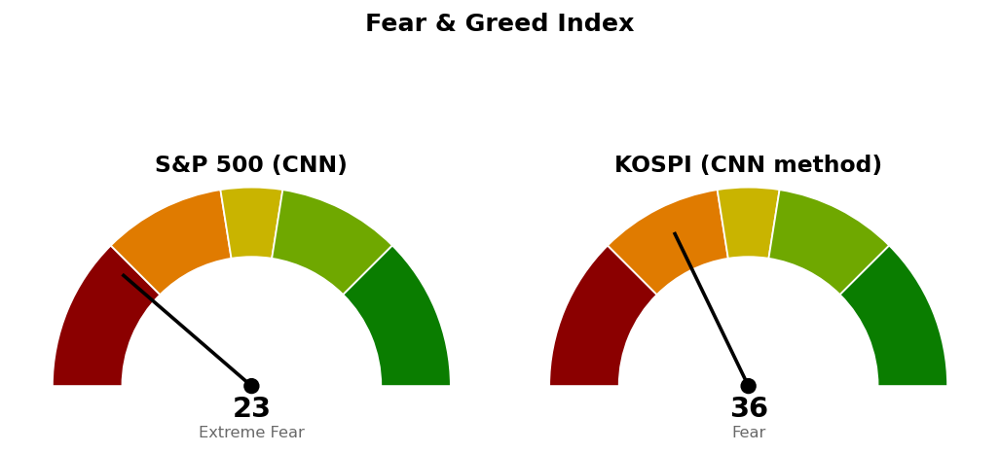

2026-11-02 장전 예측 5건: 5건 중 1건 적중(20.0%)
| 예측 | 근거 | 실제 | 판정 |
|---|---|---|---|
| 나스닥 종합 종가 25,685 상회 | 기준선 25,685 — 10/30 종가 25,437, 나스닥100 선물 +0.87% | 종가 25,164 (-1.07%) | 빗나감 |
| 나스닥 종합 장중 저가가 25,131 위 유지 | 다음 지지·사다리 1차 25,131(종가 대비 ATR 421의 0.73배 아래) — 선물 +0.87%, 장중 저가 28,587 | 저가 25,146 | 적중 |
| S&P 500 종가 7,613 상회 | 일봉 38.2% 되돌림선 7,613 — 10/30 종가 7,580, S&P 500 선물 +0.50%, VIX 18.91(-2.63%) | 종가 7,541 (-0.51%) | 빗나감 |
| 나스닥 종합, S&P 500 대비 강세 마감 | 나스닥100 선물 +0.87% 대 S&P 500 선물 +0.50% | -1.07% 대 S&P 500 -0.51% | 빗나감 |
| 에너지 (XLE), S&P 500 대비 강세 마감 | 20일 초과수익 +13.31% 1위, 10/30 초과수익 +3.72% | -3.96% 대 S&P 500 -0.51% | 빗나감 |
US 최근 90일 누적 47건 중 35건 적중(74.5%) · 최근 20건 20건 중 12건 적중(60.0%)
나스닥은 장중 25,799로 기준선 25,685를 넘었다가 25,164로 마감했고, S&P 500도 장중 7,662까지 올라 7,613을 넘었다가 7,541로 마감했습니다. 상승 출발을 가리킨 선물을 근거로 건 세 건이 종가에서 모두 빗나갔고, XLE는 원유 선물 -7.51%(104.12→96.30달러)와 같은 날 -3.96%였습니다.
직전 시황은 11/2 미국 장전 회차이며, 가격은 10/30 미국 마감 후 회차가 등록한 값입니다.
| 직전 가격 | 판정 방식 | 11/2 결과 | 판정 |
|---|---|---|---|
| 나스닥 기존 두 회차(10/30 시가 25,592) | 11/2 시가 전량 매도 (사다리 취소) | 시가 25,600 | 집행 · 매수가 대비 +0.03% |
| 나스닥 기준선 25,685 | 일봉 종가 상회 | 고가 25,799 · 종가 25,164 | 미충족 |
| 나스닥 다음 지지·사다리 1차 25,131 | 일봉 종가 하회 / 장중 저가 도달 | 저가 25,146 · 종가 25,164 | 미충족 · 15포인트 위에서 멈춤 |
| 나스닥 취소선 24,262 | 일봉 종가 하회 | 종가 25,164 | 미충족 |
| S&P 500 기준선 7,782 | 일봉 종가 상회 | 고가 7,662 | 미충족 |
| S&P 500 다음 지지 7,541 | 일봉 종가 하회 | 종가 7,541.40 (선 7,541.19) | 미충족 · 0.2포인트 위 |
| S&P 500 취소선 7,517 | 일봉 종가 하회 | 저가 7,539 | 미충족 · 지킴 |
| QQQ 730 · XLE 70.80 · XLP 94.21 · XLV 190달러 | 일봉 종가 상회 | 681 · 67.25 · 90.83 · 184.60달러 | 미충족 |
두 지수 모두 직전이 적은 "못 지키면" 가격(나스닥 25,131, S&P 500 7,541)까지 내려왔으나 종가로 내주지는 않았습니다. 장전 회차는 선물 상승을 근거로 기준선 회복 쪽 예측을 걸었고 그 판단은 틀렸습니다. 판정된 가격이 없어 직전 계획을 그대로 유지하며, 기준선·도착지·사다리·취소선 숫자는 전부 직전과 같습니다.
20일선·50일선은 지수이동평균입니다. 경로를 말할 근거가 없어 방향을 말하지 않고 기준선과 두 갈래만 냅니다.
기준선과 다음 지지 모두 한 세션 안에 닿는 거리입니다(11/2 장중에는 기준선을 넘었습니다). 180일 박스(21,425~27,401) 안쪽 판정은 중립(지지 테스트 거래량 혼조, 저점 절하, 상승봉 대 하락봉 거래량비 1.03)입니다.
종가가 다음 지지 위에 붙어 있어 다음 세션 종가로 7,541과 7,517이 함께 판정될 수 있습니다. 7,517 아래로는 7,450~7,470(피보나치 61.8% 되돌림 + 7,450 라운드), 그다음 7,368~7,400(피보나치 78.6% 되돌림 + 90일 박스 하단 7,371)이 있습니다. 기준선 7,782는 한 세션 안에 닿기 어려운 거리입니다. 90일 박스(7,371~7,828) 안쪽 판정은 중립(저점 절하, 거래량비 1.01)입니다.
S&P 500 7,541이 200일 이동평균 7,313 위(+3.13%, 4/8부터)라 새 계획을 낼 수 있는 국면입니다.
| ETF | 등록일 | 현재 | 진입 | 손절 | 목표 | 상태 |
|---|---|---|---|---|---|---|
| Invesco QQQ (QQQ) | 2026-10-22 | 681 | 730 | 717 | 750 | 진입 대기 |
| 에너지 (XLE) | 2026-10-20 | 67.25 | 70.80 | 68.87 | 74.54 | 진입 대기 |
| 필수소비재 (XLP) | 2026-10-23 | 90.83 | 94.21 | 92.40 | 99.40 | 진입 대기 |
| 헬스케어 (XLV) | 2026-10-30 | 185 | 190 | 185 | 207 | 진입 대기 |
이번 회차 새 ETF 스윙 계획은 없습니다. 가장 가까웠던 SPY 눌림 매수(1:2.26, 손절 1.50 ATR)는 진입가 729.80달러가 현재가 아래 2.77 ATR이고, 20일선 아래 · 상대강도선 신고가 아님 · 거래량 강도(되돌림인데 5일 평균이 20일 평균의 1.15배) · 박스 안쪽 분산 우위가 미달입니다. QQQ 회복 매수는 1:0.60으로 패스입니다.
상위 2개는 필수소비재 · 헬스케어입니다. 11/2 하루 등락은 임의소비재 (XLY) +2.41%, 기술 (XLK) -2.95%, 에너지 (XLE) -3.96%였습니다.
종목 발굴: 200개를 훑어 1차 26개, 구조 판정 12개 중 3개가 남았습니다(박스 판정 불가 2개, 추격 비권장 3개 등 탈락). 1순위 젠맵 (GMAB, 헬스케어)은 이 브리핑 뒤에 배치가 정식 리포트를 씁니다. 알트리아 그룹 (MO)과 존슨앤드존슨 (JNJ)은 후보이며 리포트가 아닙니다 — 텔레그램으로 종목명을 보내면 리포트가 나갑니다.
| 항목 | 값 | 직전 대비 |
|---|---|---|
| 미국 경기선행지수 | 101.00 (9월) | 전월 대비 +0.05 · 직전 회차와 같은 값 |
| 한국 경기선행지수 | 102.53 (9월) | 전월 대비 -0.13 · 직전 회차와 같은 값 |
| 미 10년 명목금리 | 확정 4.94% (10/30) · 지수 시세 4.894% (11/2) | 확정 -0.04%포인트 · 시세 -0.035%포인트 |
| 미 10년 기대물가 | 2.29% (11/2) | -0.05%포인트 |
| 미 10년 실질금리 | 2.60% (10/30) | -0.03%포인트 |
| 유가 (WTI) | 확정 103.37달러 (10/27) · 선물 96.30달러 (11/2) | 확정 갱신 없음 · 선물 -7.51% |
| 달러지수 (광의) | 121.67 (10/30) | -0.07 |
| 변동성지수 (VIX) | 21.15 (11/2, 장중 18.03~21.77) | 전일 19.42 · +8.91% · 백분위 산출물 없음 |
경기선행지수는 장기 평균을 100으로 놓고 경기 방향을 몇 달 앞서 보여주는 OECD 지표이며, 새 발표가 없어 해석을 바꾸지 않습니다. 11/2 기대물가 -0.05%포인트는 같은 날 원유 선물 -7.51%와 같은 방향입니다. 실질금리 확정치는 10/30까지라 11/2 명목금리 하락이 어느 쪽에서 왔는지는 나누지 않습니다. 금 · 장기채 가격은 받지 않아 실질금리 방향과의 일치 여부는 적지 않습니다. 이 절은 지수 기준선에 반영하지 않습니다.

S&P 500은 CNN 공식값이며 1주 전 29.8, 1개월 전 38.2였습니다. 점수를 끌어내린 항목은 안전자산 선호 1.8, 변동성 12.5, 모멘텀 13.2이고, 가장 높은 항목은 주가 폭 40.8입니다. 코스피는 CNN 방식을 한국 데이터로 재구성한 값이며 공식 지수가 아닙니다. 일곱 항목을 모두 썼고 기준일은 11/2입니다. 가장 낮은 항목은 모멘텀 7.8, 안전자산 선호 16.2이고, 가장 높은 항목은 풋/콜 비율 74.0입니다.
| 날짜 (미국) | 이벤트 | 확인할 것 |
|---|---|---|
| 11/3 | 일정 조회상 발표 없음 | 나스닥 25,685 · 25,131, S&P 500 7,541 · 7,517 대비 종가 |
| 11/5 | 실업수당 청구 | 고용 |
| 11/6 | 고용보고서 · 실업률 | 고용 |
1. 매수 쪽 — 나스닥 사다리는 25,131에 장중 저가로 닿으면 계좌의 2%, 24,425에 닿으면 2%를 더 삽니다. S&P 500은 두 회차를 모두 채워 이번엔 살 자리가 없습니다. 2. 일봉 종가로 나스닥 24,262 아래면 남은 회차를 멈추고 산 회차를 다음 세션에 전량 매도 (사다리 취소), S&P 500 7,517 아래면 1차(7,653) · 2차(7,578)를 다음 세션에 전량 매도 (사다리 취소)합니다. 3. XLV 진입 대기 — 일봉 종가 190달러 상회 시 계좌의 13% 이내로 진입, 185달러 장중 도달 시 전량 매도 (손절), 207달러에서 전량 매도 (목표 도달). 4. QQQ 진입 대기 — 일봉 종가 730달러 상회 시 계좌의 13% 이내로 진입, 717달러 장중 도달 시 전량 매도 (손절), 750달러에서 전량 매도 (목표 도달). 5. XLE 진입 대기 — 일봉 종가 70.80달러 상회 시 계좌의 13% 이내로 진입, 68.87달러 장중 도달 시 전량 매도 (손절), 74.54달러에서 전량 매도 (목표 도달). 6. XLP 진입 대기 — 일봉 종가 94.21달러 상회 시 계좌의 13% 이내로 진입, 92.40달러 장중 도달 시 전량 매도 (손절), 99.40달러에서 전량 매도 (목표 도달).
다음 세션에 볼 것 — S&P 500이 7,517 위에서 마감하는지입니다.
ATR: 하루 평균 변동폭(14일).
지수이동평균: 최근 가격에 더 무게를 둔 평균.
상대강도지수(RSI): 최근 14일 상승폭과 하락폭의 비율로 과열·침체를 보는 0~100 지표.
VIX: S&P 500 옵션 가격에서 뽑은 향후 30일 예상 변동성.